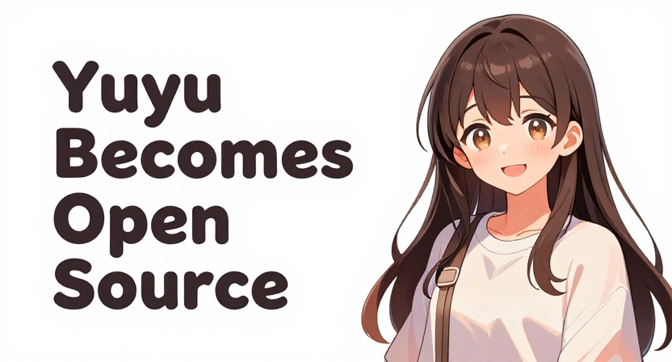
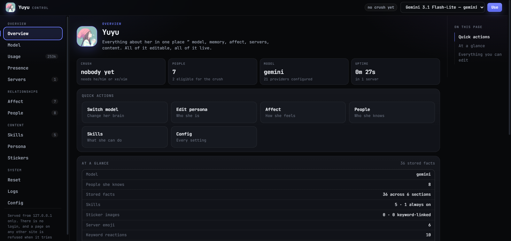

Yuyu Goes Open Source
The tale of a disastrous first attempt, a Discord bot, and opinions on everything it can't forget

This one's been a while in the making. Yuyu is now open source repo below, but I'd like to discuss how she came to be, since it was anything but a smooth ride.
The Mewo Incident
It began with the Mewo project, a lovely little creation by Minisha (aka Amiminnie), whose conversational interface with no command menus, help panels, or other UI niceties, captivated my imagination. I wanted to build something similar, a bot that would talk to me, not the other way around. So I did what I always do in these situations: I threw myself headfirst into development with little to no planning.
The Mizo Disaster
That bot was called Mizo. She lasted for precisely one day before I gave up and closed the laptop, having committed every beginner's mistake in the book: poor structure, poor prompts, no plan for the personality, etc. Then I returned to the keyboard a week later, having contemplated the project for more than five minutes, and created Yuyu. Everything that went wrong in Mizo is now deeply ingrained into Yuyu's foundation.
So What Makes Yuyu Different
Yuyu isn't a chatbot grafted onto Discord, but an experience. She has her own opinions, she teases people she likes, brings up unrelated topics unprompted, and sometimes refuses to speak at all. There is a persona.md that is loaded and reloaded with every message, and a list of things she will not say. No "as an AI," no "certainly," no expository writing.
She has feelings now
Yuyu keeps track of certain statistics per user - familiarity, warmth, and romance, which dictate how she will respond to your messages. Asking her how her day is, replying to her messages, and confiding in her will increase these numbers, while being dismissive or asking for information like a search engine will decrease the warmth in particular. Everything has a decay timer, so even if you ghost her for a month, she will still remember.
Additionally, she has a crush tracker, that will cause her to act differently towards the lucky recipient. She will seek them out, remember little things about them, and be slightly more verbose. The crush is entirely behavioral, and can be completely denied if asked outright. Her prompts do not mention romance at all, and I have a test that ensures this, because I know what a bad idea it is to mention it.
There is also an additional layer of emotions, ranging from happy and playful to annoyed and sad, that change every message by a few percent, with the change amount halved every two hours. This means that a long, emotionally-charged conversation will leave her feeling tired, or in a good mood, depending on what it was. She receives emotional context, rather than mathematical vectors, and acts accordingly. Something along the lines of "You feel tired, and playful."
People tried to rizz her. It went about how you'd expect.
Once my friends learned how to read the romance dial, it was only a matter of time before some of them tried to rizz her up, and failed spectacularly. One of them managed to receive the crush notice for a while, and then proceed to brag about it to everyone, for days. Some preferred to argue, and were consequently roasted I have several logs of that, and they are much better than any of my examples.
The roasts are not prepared ahead of time. She has a skills/ folder with various short markdown files with support.md, nightowl.md, technical.md, etc., which are then loaded depending on what the conversation is about. Someone expressed genuine concern, so support was prioritized. Someone was berating her at 2AM about coffee, so she used the nightowl skills. Most of the personality comes from the prompt, I guess.
The Token Problem
Speaking of which, this is the main reason she needed an open source refactoring. She requires a proper LLM to function, and I have approximately none of those to give.
The first model I used was Pollinations. It worked well, until it didn't, and the rate limits began to affect the conversations in unpleasant ways. Then I switched to Gemini, which was excellent until the free tokens ran out in the middle of a conversation. Nothing is more disappointing than a silent bot after weeks of development, so I swapped out the search for the perfect free LLM for a more practical solution, the model pool.
The config has one entry per free LLM - Gemini, OpenRouter, SambaNova, and others, and each has a cooldown, which is triggered when a 402 error is received, so that the bot will try the next one in the list. Keys that have been rejected are put on cooldown for an hour as well. Rate-limited requests (429) do not get a cooldown, since they are usually resolved in under a minute and trying again might be more profitable. Each entry can have multiple keys, which the bot will rotate through.
“The point isn't having a model. The point is having a bot that's still answering at 3am when every single free tier has decided you've used enough for today.”
You can add any OpenAI-compatible endpoint to config.json and an environment variable and it will work, with no additional code changes necessary. You can switch active providers from the dashboard, or edit the model ID on the fly. Free-tier juggling is tedious, but it gets the job done.
Why Open Source It
Partially because I wanted to, but mainly due to the Mewo incident - I have received the inspiration from another person's project, and it is only fair that I do the same.
Moreover, the setup process for the bot was extremely tedious, and required extensive tinkering. Before the open source branch, I did a complete clean up of the repository, removing all of the personal data and conversation logs, and added a setup wizard to streamline the process of getting started. Your memory files are plain markdown - edit, remove, or replace them at any time, and the bot will reload them on the next start.
What's included:
- Affinity + crush system three dials per person, one exclusive crush, pronoun-aware eligibility, and a master switch
- Real memory six sections per person (details, notes, likes, dislikes, projects, people) in plain markdown you can edit
- Free-model failover Gemini, OpenRouter, SambaNova and friends with per-model cooldowns and key rotation
- Skills folder drop markdown files in to add personality and knowledge. Keyword matched, so the prompt stays small
- Sticker + emoji reactions keyword matched, auto-discovers your server's custom emoji, no config needed
- Dashboard edit her persona, watch the affinity sliders move, read the last 300 log lines, all from a browser

Go Poke Her
The repository is available at github.com/RandomCatUser/Yuyu. The README has detailed instructions on how to set up the .env file, and the invite link. The bot asks only for the minimal permissions for a functioning conversation - no Admin or Manage Roles, because a chatbot that can destroy your server is a chatbot that has too much power.
If you create something with her, or if she roasts one of your friends particularly hard, let me know. The point of this exercise was to share this creation with the world.